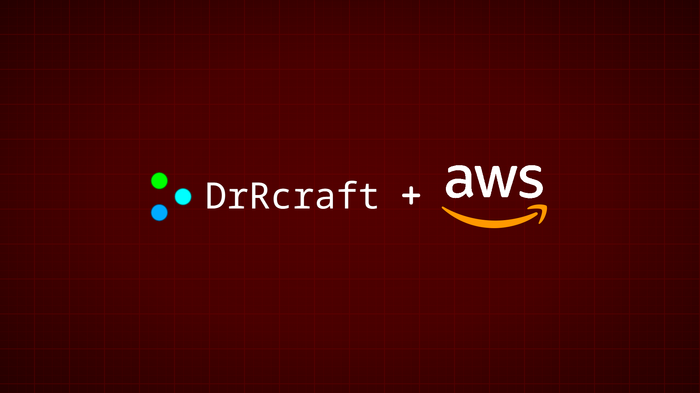
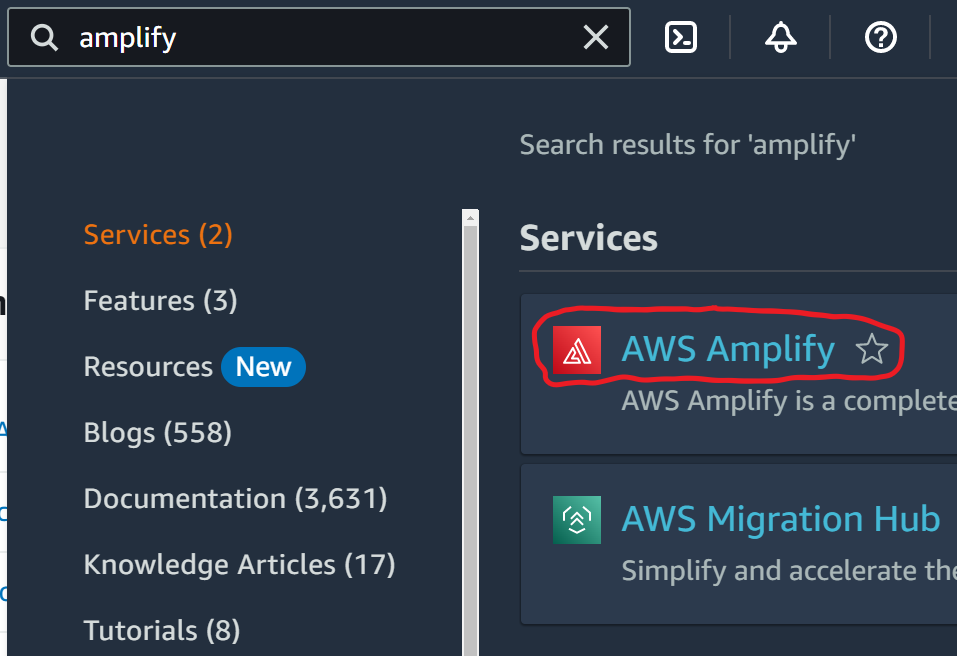
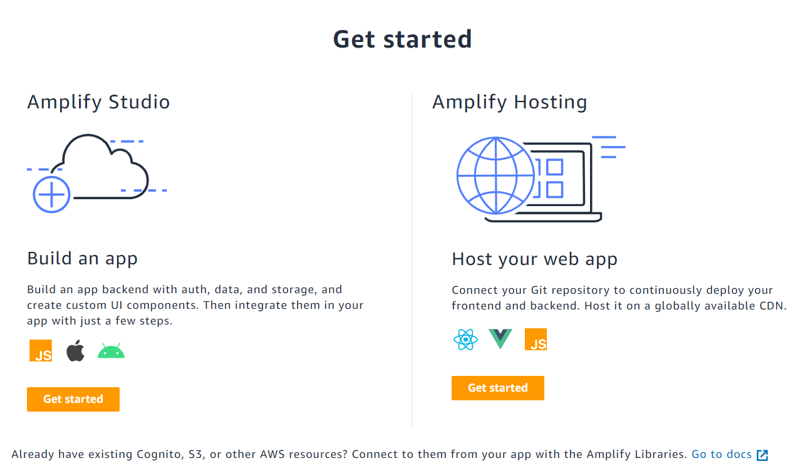
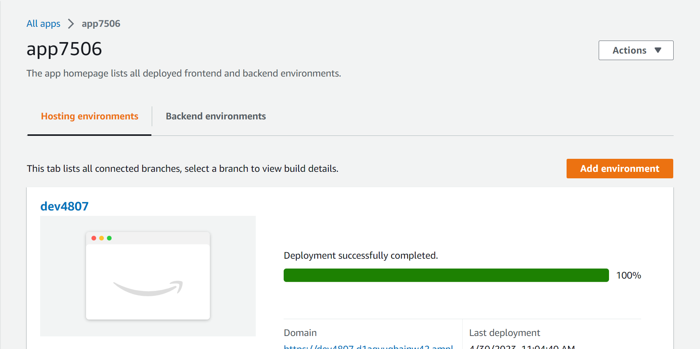

Deploying to AWS
Note: Depending on how much of your free tier you went through this month, you may have to pay for deployments you make. For more information, please take a look at the AWS pricing page.
This page provides a tutorial on deploying your program in the DrRcraft Code Editor to production using AWS. If something is missing or incorrect, please create a pull request on GitHub so it can be fixed as soon as possible.
So, first, you need to find a program to deploy. If it is an HTML, CSS, and JS program, just continue right below this paragraph. If it is a Plain JavaScript or Python program, though, scroll down to the "Plain JavaScript and Python" section. With all of that out of the way, let's get deploying!
HTML, CSS, JS
To deploy an HTML, CSS, and JS program to AWS, first go to the programs page and select the program you want to deploy. Then, click on "Release", "Share", and finally, "Export / Download as HTML". You should now see a file downloading, titled index.html or something similar. This is what you are going to deploy to AWS. Next, open the location of the HTML file you just downloaded, and copy the path, as it will be used later.
After doing that, log in to your AWS account, or sign up for an AWS Free Tier account if you do not have one. Once you've reached a page titled "AWS Management Console", go to the search bar and type in "amplify". You should see a service called "AWS Amplify" near the top of the search results.
Click on it and scroll to the very bottom of the page it redirects you to. It should look like this:
Click the "Get Started" button under "Amplify Hosting: Host your web app", and select "Deploy without Git provider". Before you proceed with AWS, though, you need to compress the HTML file you downloaded to a .zip file. In most operating systems, there is a way to easily do this.
Go back to AWS, and select "Drag and drop" as the method. Simply drag your .zip file in there, and click "Save and deploy".
After a few minutes, you should see a page that looks like this. If you do, then congratulations! You have successfully deployed your HTML, CSS, and JS project to AWS! Open the domain it gives you to see your production website.
